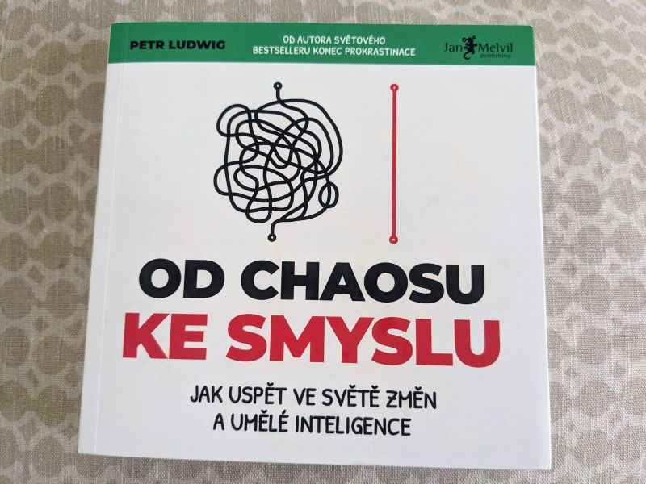
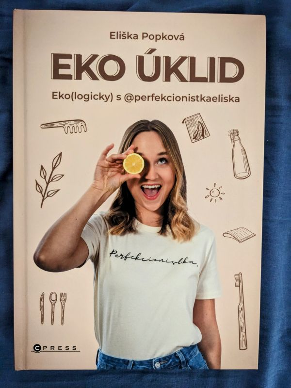
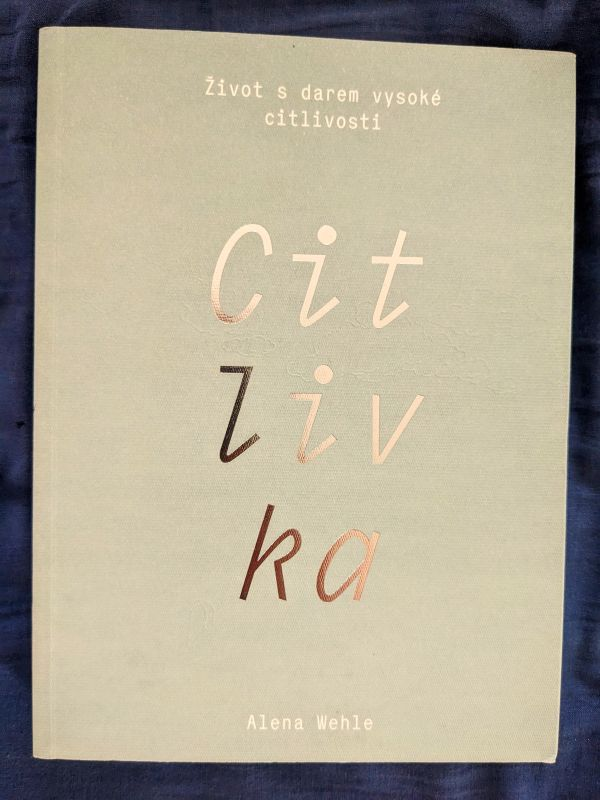
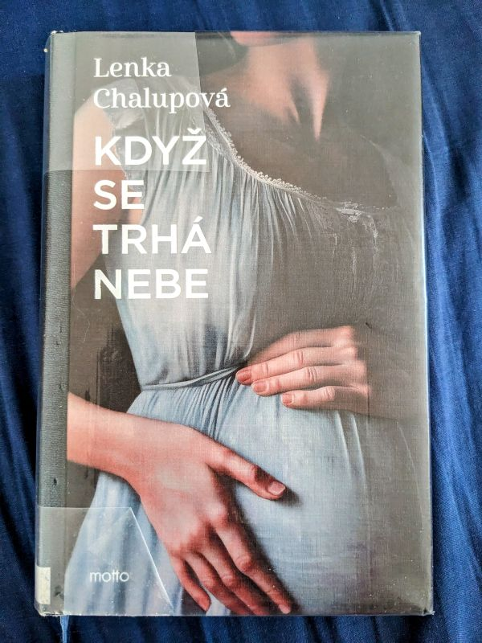
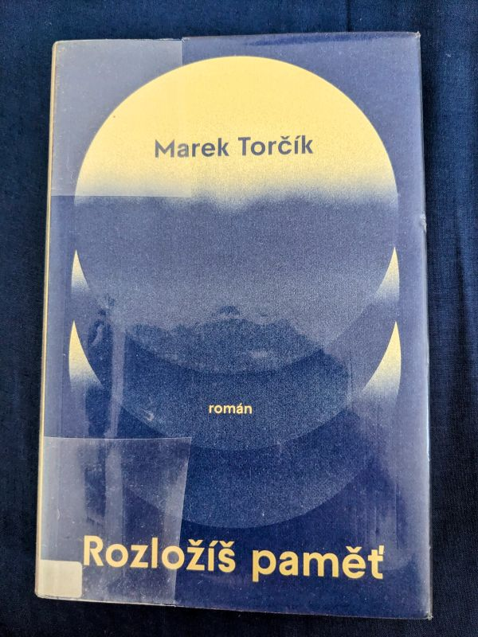
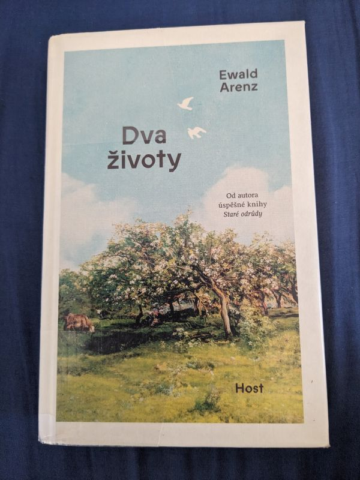
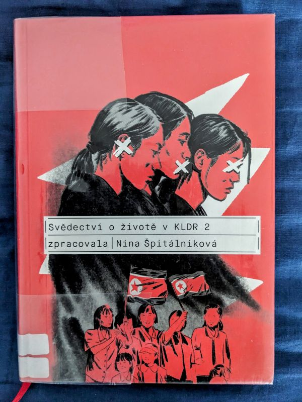

Podzim klepe na dveře, a to je ten pravý čas zachumlat se do deky a vytáhnout co? Knihu!
Petr Ludwig - Od chaosu ke smyslu
Možná si ještě vzpomínáte na boom kolem knihy „Konec prokrastinace“, která byla ve své době fenoménem. Petr Ludwig teď vydal navazující publikaci „Od chaosu ke smyslu“, v níž se snaží předat know-how, jak uspět v dnešní turbulentní a nejisté době. Přestože jsem k těmto instantním návodům na život trochu skeptická, čte se to dobře, text je stručný, doplněný názornými obrázky a jde přímo k jádru věci. Přesto mám pocit, že se mi její obsah nevryl zas tak hluboko pod kůži, protože s odstupem času si vybavím už jen kapitolu o optimistickém vysvětlovacím stylu a přerámování negativních situací, které Ludwig demonstruje na situaci s poškrábáním nového auta :-D Pokud tedy chcete jít v tématu více do hloubky, kniha vás asi úplně neuspokojí – jako odrazový můstek ale může posloužit dobře.

Eliška Popková - Eko úklid
„Perfekcionistku Elišku“ a její nakažlivá úklidová videa občas sjíždím na Instagramu, když mě zrovna popadne uklízecí rauš. Objevila jsem díky ní kouzlo perkarbonátu sodného, na jehož čistící schopnosti od té doby nedám dopustit ;-) Kniha Eko úklid obsahuje ještě celou řadu dalších praktických tipů, ať už máte rádi v uklízení systém, snažíte se uklízet bez zbytečné chemie nebo třeba jen hledáte návod, jak snadno vyčistit připálený hrnec. Všechny informace z Instagramu zde naleznete přehledně a tematicky srovnané – jinak by to člověk od perfekcionistky ani nečekal :-D!

Alena Wehle - Citlivka
O životě s vysokou citlivostí bych mohla vyprávět – ale pro někoho, kdo s tímto povahovým rysem od malička žije, je možná mnohem cennější si o tom přečíst. Od autorky Aleny Wehle, která to všechno také z osobní zkušenosti zná. Útěky z večírků nebo setkání, kde je moc lidí (a to i přesto, že je máte třeba rádi). Pocity emočního zahlcení ještě několik hodin poté. Ofrňování nad povrchními small talky o ničem a naopak touha po hlubokých rozhovorech. Nasávání nálad lidí okolo. Samota, ticho a klid jako esenciální potřeba, která ale s určitými fázemi života (ehm, mateřství) naprosto nejde dohromady. Pocity nepochopení ze strany většinové společnosti, která to má jinak. Pokud hledáte validaci a pomoc se sebepřijetím, v této knize se vám dostane obojího a jako bonus ještě spousty důvodů, proč se na vysokou citlivost zkusit dívat jako na dar. Citlivka není úplně strukturovaná, autorka občas skáče z tématu na téma, ale přesto se čte lehce a pohladí po duši.

Lenka Chalupová - Když se trhá nebe
Když se trhá nebe je výborný román s pro mne naprosto nečekaným vyústěním, což u knih vždycky cením. Už jen samotné umístění příběhu do Československa předválečných let a sledování osudů židovské rodiny přerovského továrníka Hugo Rosenbauma je předzvěstí dramatu. Děj se točí kolem Hugovy nenaplněné touhy po dědici továrny – pro splnění svého snu se nezalekne takřka ničeho a následky na sebe nenechají dlouho čekat… Autorka umí udržet čtenáře po celou dobu v napětí a přestože tušíte, že se nutně schyluje k tragédii, dlouho absolutně netušíte, odkud to přijde. Kniha působí o to dramatičtěji, že vše vygraduje ještě předtím, než vypukne druhá světová válka, ovšem čtenář už si snadno domyslí, co dalšího bude následovat. Jistou čtenářskou atraktivitu dodává příběhu také fakt, že postava továrníka Rosenbauma není tak úplně smyšlená. Závěrečný epilog, který dovypráví životní osudy některých postav, pak zanechává dojem, jako byste právě skutečně dočetli příběh, který se opravdu stal, a ne román. Uvěřitelnosti napomáhá také fotografická příloha dobových snímků Přerova a míst, kde se děj knihy odehrává.

Marek Torčík - Rozložíš paměť
Minulý školní rok vám fyzikář vyprávěl o paprscích z hvězd, o tom, jak dlouho putují na zem. V hlavě ti utkvěla představa – každá tečka na obloze je miliony let stará, čím déle se na noční nebe díváš, tím víc jich vidíš. Ve skutečnosti tam už dávno nejsou. To, co vidíš, jsou jen další a další vzpomínky. Bez ohledu na to, jak daleko paprsek cestuje, navždy v něm zůstává otisk, vzpomínka na místo odrazu.
Kouzlo nechtěného způsobilo, že se u mě v tu samou dobu sešla ještě jedna kniha, jejíž děj je umístěn do jinak zcela nezajímavého a literaturou opomíjeného městečka Přerova :-D Rozložíš paměť byl jednu dobu mezi knižními influencery docela hit, ale musím říct, že přestože tato autobiografická próza dosahuje nesporných kvalit, bylo pro mne obtížné se do děje ponořit a začíst se – možná i kvůli autorově specifickému stylu psaní. Dokonce jsem na začátku i uvažovala, jestli knížku úplně neodložím – na první dobrou mě zkrátka vůbec neoslovila. Hlavní hrdina vyrůstá v neúplné sociálně slabé rodině, poznamenané dědečkovým alkoholismem, ve škole se potýká se šikanou a v dospívání i s odlišnou sexuální orientací. Postupně zabředáváme spolu s ním do stále temnější rodinné historie, vynořují se bolestivé vzpomínky odehrávající se v kulisách šedivého maloměsta. Pokud máte chuť na něco velmi syrového a depresivního, tady to je. Ale ujišťuju vás, že se po dočtení budete potřebovat zahojit nějakou duhou a jednorožci 8-)

Ewald Arenz - Dva životy
Po posledním literárním setkání s Arenzem ( Láska za mizerných dní) jsem se těšila, že si od něj přečtu zase něco tak mimořádného, jako bylo Velké léto. Musím říct, že na pomyslný žebříček bych Dva životy umístila někam na prostřední příčku - líbila se mi jednoduchá zápletka i “retro” umístění příběhu do Západního Německa začátku 70. let a svým způsobem i autorovo poetické líčení idylického života na venkově, jitřící všechny smysly, ač mi přišlo, že místy trochu tlačí na pilu. Ústředním motivem knihy je milostný příběh dvacetileté Roberty, která se čerstvě vyučila švadlenou, má velké a odvážné sny a plány, ale přesto se s ní setkáváme v okamžiku, kdy se vrací do milované rodné vesnice, aby se stala následovnicí rodinného hospodářství, a jejího starého kamaráda z dětství - Wilhelma. To, co na začátku vyznívá jako červená knihovna, zhruba v poslední třetině knihy protne očekávaná, a přesto šokující tragická událost, která poslouží jako katalyzátor velkých změn nejen v Robertině životě… Víc už asi nemá smysl prozrazovat. Přestože Velké léto je stále nedostižné, Dva životy bych označila za příjemnou letní oddechovku (taky že to byla moje volba na letošní dovolenou na Sicílii) a pokud vás neurazí lehce prvoplánový happy end, věřím, že se vám bude líbit.

Nina Špitálníková – Svědectví o životě v KLDR 2
Druhý díl rozhovorů, které autorka posbírala se skupinou uprchlíků z KLDR, je stejně syrový, informačně nabitý a šokující jako první kniha. Opět zde najdete příběhy Severokorejců z různých sociálních vrstev, s různými zkušenostmi s totalitním režimem, různé nátury… jedno je však spojuje, a to je fakt, že navzdory všemu v určité fázi svého života došli do bodu, kdy se útěk ze země jevil jako jediné možné východisko. Obzvlášť těžce se čtou příběhy, kdy útěkem došlo k rozdělení rodiny, ať už záměrně či vlivem okolností. Také informace o naprosto katastrofické úrovní korejského veřejného zdravotnictví jsou pro nás jen stěží pochopitelné. A za mne asi vůbec nejhorší bylo vyprávění o tom, jak funguje povinná vojenská služba, na které Korejci zpravidla stráví 10 let, a jak nelidské podmínky zde panují. Odlehčené čtení to tedy, jak je vidno, rozhodně není, přesto považuju Svědectví o životě v KLDR za důležitou a zcela mimořádnou studnici informací, kterou by si měl přečíst každý.
